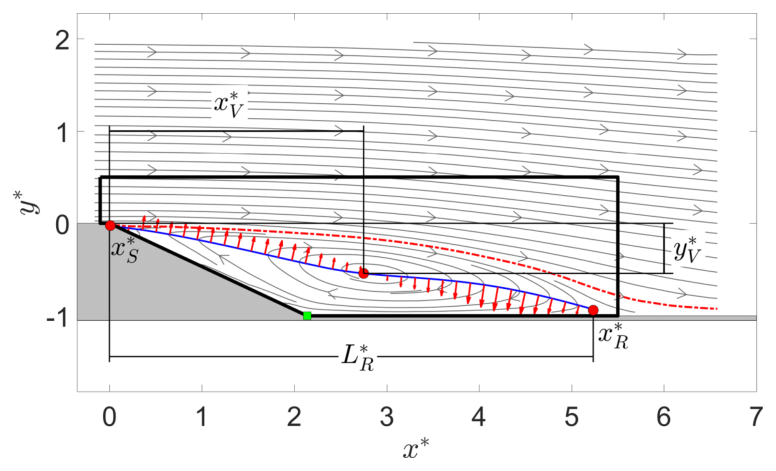
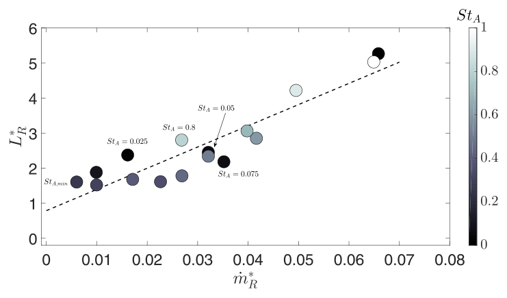
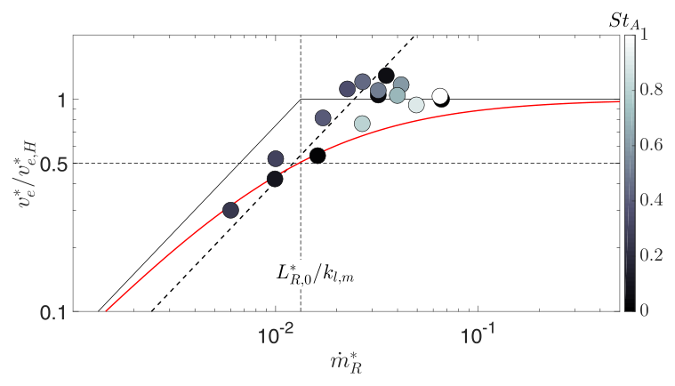
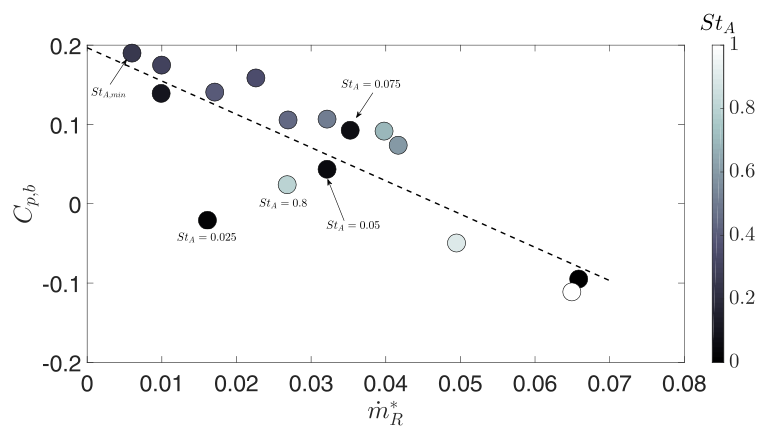

01中文摘要
提出以质量卷吸为核心的分离流解释框架，其基石是把平均分离流表示为随平均回流长度缩放的驻定展向涡。用合成射流阵列强迫下坡道分离流，获得 21 种平均分离拓扑，并由 PIV 提取回流质量流量、分离泡尺度与涡环量。结果表明涡环量和特征尺度均随回流强度简单标度：L*_R 与 ṁ*_R 近似线性；并可由单个壁面压力测点估计回流质量流量，为工业可部署的分离控制提供依据。
02阅读说明
文章类型：理论建模 + 实验验证（RANS 平均场框架下的定常涡模型，配 2D-2C PIV、热线与壁压测量）。材料范围：完整 19 页正文（扫描件含 HAL 封面共 20 页），bundle 含 metadata、12 张裁剪图及图注、带页码全文；正文、公式、图注齐全，公式 OCR 有少量乱码但可由上下文与图注复原。信息完整度：高。提取口径：仅依据 bundle 文本与图注，未读 PDF 原页；符号沿用原文以 ∗ 表示按 U∞ 和/或 h 归一化。 文章类型：期刊
03一句话核心与三句话摘要
用随再附长度缩放的定常涡模型，把分离流回流量与涡尺度、涡环量及单点壁压定量联系起来。
- 已有研究显示质量卷吸能简单描述自然与受迫分离流，但尚无用卷吸量统一刻画分离区尺度与环量的框架，且回流量 ṁR∗ 在工程上不可直接测量。 AI概括
- 作者把平均分离区近似为随平均再附长度 L∗R 缩放的二维定常椭圆涡，用 25° 斜坡、h=100 mm、U∞=20 m/s、Reθ≈2550 的基准流及 3 个合成射流产生的 21 个受迫平均流（E_A=2 V，St_A=0–1）作 PIV 验证。 原文明确
- 结果支持 L∗R 与 ṁR∗ 线性、涡环量与 (ṁR∗)² 成正比，并据 Joukowski 定理推出底部壁压 Cp,b 与 ṁR∗ 线性，从而可用单个压力孔估计回流量。 原文明确
04核心内容清单
| 要点 | 类型 | 重要性 | 原文依据 | 属性 |
|---|---|---|---|---|
| 提出以定常展向涡表示平均分离区的卷吸框架：涡尺度 L∗R 与环量 ΓV∗ 均由回流量 ṁR∗ 决定。 | 理论模型 | A | 第4–8页，Sec. II，式(6)–(13) | 原文明确 |
| 量纲分析给出核心关系 ΓV∗∼(L∗R)²∼(ṁR∗)²，是全文的解释框架。 | 核心公式 | A | 第8页，式(13) | 原文明确 |
| 实验证实 L∗R 对 ṁR∗ 近似线性，式(16) 拟合得 km,L≈60、L∗R,0≈0.8。 | 实验验证 | A | 第13页，图8、式(16) | 原文明确 |
| A∗R 与 (L∗R)² 成比例，支持涡面积标度并表明 L∗R 仍是平均场主特征长度，受迫涡列的特征尺度不改变该标度。 | 实验验证 | A | 第12页，图6、式(12) | 原文明确 |
| 周期激励在 StA≈0.25–0.35 使 L∗R 降到约 1.5（降幅达 75%），StA≈1 恢复基线，StA=0.8 有局部极小。 | 现象 | A | 第11页，图5 | 原文明确 |
| ṁR∗ 是比 StA 更合适的 L∗R 预测量：StA=0.8 的局部极小在 L∗R–ṁR∗ 图上落入同一直线。 | 结论 | A | 第12–13页，图8 及正文 | 原文明确 |
| v∗e,R 在 ṁR∗>0.03 时近似常数（≈0.021），更小回流量下按比例下降，行为类似高通滤波，截止 ṁR,cut∗≈0.0123。 | 参数规律 | B | 第15页，图10、式(19)(20) | 原文明确 |
| 用 Joukowski 定理与壁法向压力梯度量级分析推出 Cp,b≈Cp,V∼ṁR∗，单点底部壁压可作回流量观测器。 | 理论推导+验证 | A | 第16–18页，式(21)–(28)、图12 | 原文明确 |
| 受迫时分离点后移、再附点前移共同缩短 L∗R，且 x∗S≥x∗J。 | 现象 | B | 第10–11页，图4、图5 | 原文明确 |
| 回流量的 PIV 估计连续性误差 |ε∗R|<2.5%，但 ε∗R>ṁR∗ 的频段（StA=0.125–0.225）数据不可用。 | 测量不确定度 | B | 第11–12页，图7、式(15) | 原文明确 |
| v∗e,H 对 δe/h（0.3 与 0.9）和 Reθ 不敏感，可能主要依赖几何（斜坡型面、扩张比≈1.1），故 km,L 也可能主要由几何决定。 | 推断 | B | 第15页正文 | AI概括 |
05引言：研究问题与领域缺口
分离流是钝体与地面车辆等气动损失的重要来源，控制其再附长度 L∗R 是常见目标。作者指出，尽管周期激励与 L∗R 的关系已被大量研究，受控流动的标度参数仍不清楚；Stella 等（2017）发现 L∗R 近似线性正比于无量纲回流量 ṁR∗=ṁR/(ρU∞h)，Berk 等（2017）发现以动量卷吸表示时 L∗R 也呈线性，但两者都未建立基于卷吸的框架（第2–4页，Sec. I）。本文目标有二：（1）提出以质量卷吸为核心的分离流物理模型，预测 L∗R 与涡环量 ΓV∗ 对 ṁR∗ 的依赖；（2）利用涡模型建立 ṁR∗ 与壁压的相关，使工程上可用单点压力估计回流量。假设是：平均分离区可用与 L∗R 缩放的定常展向涡表示，质量交换效率 v∗e,R 在几何固定、剪切层增长由湍流混合驱动时近似为常数（第5–7页，Sec. II）。
06流动条件与几何构型
| 项目 | 数值/描述 | 依据 | 备注 |
|---|---|---|---|
| 几何构型 | 尖缘下降斜坡，坡角 α=25°，高度 h=100 mm，展向跨满试验段，展宽比 w/h=20；二维平均流 | 第8页，Sec. III A | |
| 风洞 | S1 闭口回流风洞，试验段 2 m×2 m×5 m，最大风速 60 m/s，湍流度 <0.3% | 第8页，Sec. III A | |
| 参考速度 U∞ | 20 m/s（在斜坡上缘上方测量，全程固定） | 第8页，Sec. III A | |
| 来流边界层状态 | Reθ≈2550，在 x/h=−9、y/h=0 由平均流向速度型积分；x/h=0 处 δe/h≈0.3 | 第8页，Sec. III A | |
| 基线分离/再附位置 | 平均分离点固定在上缘 x∗S=0；平均再附点 x∗R≈5.23 | 第5页，Sec. II | |
| 合成射流阵列 | 3 个展向合成射流，缝宽 b=1 mm、长 l=660 mm，位于上缘下游 xJ=2 mm，喷轴垂直于斜面；扬声器 PD.1550，腔体 47×25×59 mm³，标称直径 380 mm，最大行程 8.2 mm | 第9页，Sec. IV | |
| 激励信号 | E(t)=EA sin(2πfAt)；EA 取 0.5、1、1.5、2、2.5 V 五档，fA 取 20 档、0–200 Hz；正式实验固定 EA=2 V 以扫频 | 第9–10页，Sec. IV、图3 | |
| 无量纲激励频率 | StA=fAh/U∞∈(0,1)，21 个受迫平均流（另含未受迫基线） | 第10、17页，Sec. IV、Sec. VII | |
| PIV 视场与采样 | 2D-2C，双 LaVision Imager LX 11M（4032×2688 px），FOV 6.3h×3.2h，每工况 500 对独立图像；64→32 px 查询窗、50% 重叠，矢量间距约 0.02h | 第8–9页，Sec. III B | |
| 热线 | Dantec 55P15（来流剖面）与 55P11（射流响应）；fs=60 kHz，采样约 10 s，30 kHz 低通 | 第9页，Sec. III B | |
| 壁压测量 | 斜坡下缘单点（Fig. 1 中 Pb）；Chell μDAQ-32C，满量程 2.5 kPa，不确定度 0.25% FR；仅平均量，500 Hz 采 3×10^4 样本 | 第9页，Sec. III B | |
| 壁温/热流 | 文中未提及（低速不可压实验，未给壁温或传热条件） | 全文 | |
| 攻角/侧滑角 | 文中未提及（仅有斜坡几何角 α=25°） | 全文 | |
| 压缩性 | U∞=20 m/s，文中未给出马赫数；按不可压平均流处理（AI推断） | 第8页 | 【AI推断】原文未明确讨论压缩性 |
07核心现象与关键参数
| 参数 | 定义 | 数值 | 关系/说明 | 依据 |
|---|---|---|---|---|
| ṁR∗ | 无量纲回流量，ṁR/(ρU∞h)，即穿过平均分离线、由再附流向分离点输运的质量流率 | 随 StA 变化；ṁR∗>0.03 为近似常卷吸率区，ṁR,cut∗≈0.0123 | 式(2)；L∗R=km,L ṁR∗+L∗R,0 | 第5、13、15页，式(2)(16) |
| v∗e,R | 平均质量卷吸速率，v∗e,R=ṁR∗/(S∗R/2)，表征分离线质量交换效率 | ṁR∗>0.03 时 ≈0.021；预测 v∗e,H=2/km,L≈0.033；Stella 等为 0.024±0.002 | 式(3)；高通形式见式(19)(20) | 第6、15页，式(3)(19)(20) |
| km,L | L∗R–ṁR∗ 线性拟合斜率 | ≈60 | 式(16) | 第13页，图8 |
| L∗R,0 | ṁR∗→0 时的外推再附长度 | ≈0.8（非零） | 式(16)；与 ṁR,cut∗=L∗R,0/km,L 对应 | 第13–14页 |
| Γ∗0 | 假想无分离（再附）流的环量，Γ0/(U∞h) | ≈−5.21（拟合值） | ΓV∗=Γ∗−Γ∗0，式(6)(18) | 第14页 |
| ṁR,cut∗ | v∗e,R 降至 v∗e,H/2 的截止回流量 | 预测 0.0133；实测 0.0123 | 式(19)(20) | 第14–15页，图10 |
| L∗R,min 与 StA,min | 受迫流最小再附长度及其对应激励 Strouhal 数 | L∗R,min≈1.5（降幅达 75%）；StA,min≈0.25–0.35；StL=StA L∗R≈0.45–0.55 | — | 第11页，图5 |
| ε∗R | 回流区连续性误差，ε∗R=ṁIN∗+ṁOUT∗ | <2.5%；StA∈(0.125,0.225) 时 ε∗R>ṁR∗ | 式(15) | 第11–12页，图7 |
| 位置不确定度 | PIV 平均场导出的分离/再附位置误差 | x∗S −0.15h，x∗R +0.15h，L∗R +0.3h（<基线 6%） | — | 第10–11页，Sec. IV |
| Reθ | 来流边界层动量厚度雷诺数 | ≈2550（U∞θ/ν） | — | 第8页 |
08方法与数据
实验在 Orléans 大学 PRISME 实验室 S1 闭口风洞进行：试验段 2 m×2 m×5 m，湍流度 <0.3%，U∞=20 m/s（斜坡上缘上方测量），Reθ≈2550（x/h=−9, y/h=0 由平均速度型积分），x/h=0 处 δe/h≈0.3。模型为尖缘下降斜坡，α=25°、h=100 mm、展宽比 w/h=20，基线再附点 x∗R≈5.23。用 3 个展向合成射流（缝宽 b=1 mm、长 l=660 mm、位于上缘下游 xJ=2 mm、喷轴垂直于斜面）施加单频激励 E(t)=EA sin(2πfAt)，EA 取 5 档 0.5–2.5 V、fA 取 20 档 0–200 Hz，正式实验固定 EA=2 V，以 StA=fAh/U∞∈(0,1) 表示，21 个受迫平均流（另含基线）。测量：2D-2C PIV，双 LaVision Imager LX 11M（4032×2688 px），FOV 6.3h×3.2h，每工况 500 对独立图像，64→32 px 查询窗、50% 重叠，矢量间距约 0.02h；热线 Dantec 55P15/55P11，采样 60 kHz、约 10 s、30 kHz 低通；底部壁压用 Chell μDAQ-32C（满量程 2.5 kPa、不确定度 0.25% FR），仅取平均值（3×10^4 样本、500 Hz）。由式(2)在平均分离线两半段积分求 ṁR∗，以式(15)的连续性误差 ε∗R 评估，仅保留由分离区（−ṁOUT∗）估计的回流量。模型检验用最小二乘拟合式(12)、(13)、(16)（第8–10、12–15页）。
| 项目 | 内容 | 依据 | 备注 |
|---|---|---|---|
| 研究类型 | 理论建模（定常涡模型 + 量纲分析）+ 风洞实验验证（PIV/热线/壁压） | 第2–18页 | |
| 模型假设 | 平均流为 RANS 意义下的二维定常流；分离区用随 L∗R 缩放的椭圆展向涡表示；v∗e,R≈const；U∗R≈const；Γ0∗≈const；ωz≈U∞/h（要求 δe/h<0.3） | 第4–8页，Sec. II | |
| 回流量计算 | 在平均分离线两半段对 ρV cosφ 积分（式2），并用连续性误差式(15)筛选；最终取 ṁR∗=−ṁOUT∗（分离区段）以避开再附区激光反射伪矢量 | 第5、11页，式(2)(15) | |
| 环量计算 | 沿图1 的闭合等值线 SV 计算 Γ∗=(1/(U∞h))∮U·t ds（式17），SV 由流线构成 | 第14页，式(17) | |
| 测速 | 2D-2C PIV（LaVision Davis 8.3，FFT 多步算法，64→32 px、50% 重叠），中展面拍摄 | 第8–9页 | |
| 执行器标定 | 热线测合成射流峰值速度 UJP 对 fA、EA 的频响；fA∈(20,45) Hz 近平坦，EA≥2 V 可能接近饱和 | 第9–10页，图3 | |
| 验证方式 | 用 21 个受迫平均流检验式(12)(13)(16)：A∗R–(L∗R)²、ΓV∗–(ṁR∗)²、L∗R–ṁR∗；以最小二乘拟合斜率/截距并与 Stella 等及 Berk 等比较 | 第11–15页 | |
| 壁压关联 | 以 Joukowski 定理建立 ρU∞ΓV 与分离线压力积分的关系，再用 RANS 壁法向方程量级分析把涡心压力换成底部壁压 | 第16–18页，式(21)–(28) | |
| 二维性检验 | 对比 z/w=0、±0.33 的流向压力分布，差异很小；基线展向壁压在 z/w∈(−7.5,7.5) 近似均匀 | 第8、10页 | |
| 网格/数值方法 | 文中未提及（实验论文，无 CFD 网格） | 全文 |
09核心推导与公式
把平均分离区视为随 L∗R 缩放的二维定常椭圆涡：回流量既等于分离线质量交换通量（决定 L∗R），又等于涡内旋转质量（决定环量）；由此把 ṁR∗ 同时与 L∗R、ΓV∗ 联系，再借 Joukowski 定理把 ΓV 与涡心/底部壁压联系，形成从积分量到单点壁压的推理链。
关键假设
- 只考虑 RANS 平均场，流动二维定常；瞬时非定常性不在模型范围内（第5页）。
- 平均分离区可用一个随 L∗R 缩放的椭圆展向涡表示，涡心在 (xV,yV)，长轴近似沿平均分离线（第5–6页）。
- 质量卷吸效率 v∗e,R 在几何固定且剪切层增长由湍流混合驱动时近似为常数 v∗e,H（第7页）。
- 回流区特征流向速度 U∗R≈const（与 U∞ 同量级），故由连续性得 b∗∼L∗R（第8页）。
- 平均涡量主要由平均剪切给出，ωz≈∂U/∂y∼U∞/h；该标度要求 δe/h<0.3（引 Adams & Johnston 判据）（第7页）。
- 总环量可分解为假想再附流环量 Γ0 与涡环量 ΓV 之和，Γ0∗≈const（第7页）。
- 涡心压力可用分离线平均压力近似，并进一步用斜坡底部壁压 Cp,b 近似（第16–17页）。
推导过程
由平均流连续性，进入回流区的质量必等于离开回流区的质量；回流量定义为穿过平均分离线、由再附侧流向分离侧的净质量流率，并用正/负法向速度分量分别表示。该定义只对平均场成立，瞬时分离线的净质量交换不为零。
把回流量除以半条分离线的无量纲长度，得到平均质量卷吸速率 v∗e,R；分离线从涡心 sV 到再附点 sR 的弧长与 L∗R 同量级，故 S∗R/2∼L∗R。
若 v∗e,R 近似常数（作者引 Stella 等发现其不随 Reθ 变化），代入上式即得回流量与再附长度成正比。
把总环量写成无分离假想流环量与涡环量之和，二者均为负；涡环量按参考涡量与涡面积缩放，而平均涡量由平均剪切给出。
涡近似为椭圆，面积等于 πa∗b∗；长半轴对应半条分离线，故 a∗∼L∗R；由回流区连续性，各截面回流量守恒，−b∗U∗R≈ṁR∗≈v∗e,R S∗R/2，在 U∗R、v∗e,R 均近似常数时得 b∗∼L∗R，从而面积∼(L∗R)²。
把面积标度代入环量–面积关系，再用 ṁR∗∼L∗R，得到全文的核心式：涡环量与回流量的平方成正比。
对 21 个受迫平均流作线性拟合，得到非零截距；截距说明回流量趋零时回流区并不消失，这一点原模型未包含，作者在第V C节回头讨论。
把线性律代回卷吸速率定义并取 S∗R≈L∗R，可得 v∗e,R 随 ṁR∗ 的高通滤波形式：小回流量时 v∗e,R 与 ṁR∗ 成正比下降，大回流量时趋于常数 v∗e,H；截止值为 L∗R,0/km,L，渐近值为 2/km,L。
把涡对流体的垂直压力力与环量联系，分离线压力积分用平均压力乘分离线长度近似，归一化后得到涡环量与涡心压力系数的关系。
把 ΓV∗∼(ṁR∗)² 与 L∗R∼ṁR∗ 代入上式，得 Cp,V∼ṁR∗；该式在 L∗R 明显大于 L∗R,0 时成立。
底部壁压可通过壁法向压力梯度从涡心积分得到；用 RANS 壁法向方程作量级估计，湍流项互相抵消，∂Cp/∂y∗∼−L∗R⁻¹O(10⁻³)，因 L∗R=O(1) 而可忽略，故 Cp,b≈Cp,V∼ṁR∗。
适用边界：推导仅对平均场成立，不能描述非定常性；依赖二维、常卷吸率、U∗R≈const、Γ0∗≈const 等假设；式(8) 要求 δe/h<0.3；小回流量（ṁR∗<ṁR,cut∗≈0.0123，L∗R<1.5）时式(13) 不再严格成立；L∗R,0≠0 未被物理解释；v∗e,H 可能依赖几何，故 km,L 的普适性未经多几何验证。
10结果：主要发现与关键证据
基准流（第5页图1）在 x∗R≈5.23 再附，流线在 x∗>L∗R/2 进入回流区、在 x∗<L∗R/2 流出，分离线上 V∗ 在 x/LR≈0.5 变号。受迫流（第10页图4）剪切层增长更快并向壁偏转，L∗R 随 StA 先降后升：StA,min≈0.25–0.35 时 L∗R,min≈1.5（相对基线降幅达 75%），对应 StL=StA L∗R≈0.45–0.55，接近 Debien 等估计的自然频率 StL≈0.53–0.66；StA≈1 时恢复基线，StA=0.8 出现局部极小（第11页图5）。L∗R 的减小同时来自 x∗R 前移与 x∗S 后移，且受迫时 x∗S≥x∗J；不确定度为 x∗S −0.15h、x∗R +0.15h、L∗R +0.3h（<基线 6%）。ṁR∗ 随 StA 的变化与 L∗R 类似，在 StA=0.05 与 0.8 有两个局部极小；ε∗R<2.5%，但 StA∈(0.125,0.225) 时 ε∗R>ṁR∗，这些点被剔除（第12页图7）。A∗R 与 (L∗R)² 成比例（第12页图6）；L∗R 对 ṁR∗ 呈线性，拟合式(16)得 km,L≈60、L∗R,0≈0.8（第13页图8）；ΓV∗=Γ∗−Γ∗0 随 (ṁR∗)² 变化，Γ∗0≈−5.21，仅 StA=0.05、0.075 两点偏离（第14页图9、式18）。v∗e,R 在 ṁR∗>0.03 时约 0.021，低于由 km,L 推得的 0.033 但与 Stella 等的 0.024±0.002 同量级；ṁR∗<0.03 时线性下降，呈高通滤波特征，实测截止 ṁR,cut∗≈0.0123（预测 0.0133）（第15页图10、式19–20）。x∗V 除基线与 StA≈1 外稳定在 x∗low=1/tanα（第17页图11）；Cp,b 随 ṁR∗ 线性（第17页图12、式28）。
| 发现 | 证据 | 证据类型 | 强度 | 位置 | 属性 |
|---|---|---|---|---|---|
| L∗R 与 ṁR∗ 近似线性，式(16) 拟合得 km,L≈60、L∗R,0≈0.8；StA=0.8 的局部极小也落在该直线上。 | 图8 及其线性拟合；正文给出 60 与 0.8 | 实验标度律 | 强 | 第13页，图8、式(16) | 原文明确 |
| A∗R 与 (L∗R)² 成比例，支持 A_V∗∼(L∗R)²，并说明受迫涡列的特征尺度不改变平均场的 L∗R 标度。 | 图6 的 A∗R–(L∗R)² 相关（对数坐标）及式(12) 拟合 | 实验验证 | 中 | 第12页，图6 | 原文明确 |
| ΓV∗=Γ∗−Γ∗0 随 (ṁR∗)² 变化，Γ∗0≈−5.21；仅 StA=0.05、0.075 两点明显偏离。 | 图9 与式(13) 拟合；式(17) 沿闭合流线 SV 积分求 Γ∗ | 实验验证 | 中 | 第14页，图9、式(17)(18) | 原文明确 |
| v∗e,R 在 ṁR∗>0.03 时约为 0.021，接近常数；ṁR∗<0.03 时随 ṁR∗ 近似线性下降，呈高通滤波行为，实测截止 0.0123（预测 0.0133）。 | 图10；v∗e,R/v∗e,H=0.5 与 ṁR∗=L∗R/km,L 两条辅助线；线性拟合交点 | 参数规律 | 中 | 第15页，图10、式(19)(20) | 原文明确 |
| 周期激励使 L∗R 最大降低约 75%，最小值 ≈1.5，出现在 StA≈0.25–0.35；StA≈1 时恢复基线。 | 图5 的 L∗R(StA) 曲线；StL=StA L∗R≈0.45–0.55 与自然频率 StL≈0.53–0.66 比较 | 控制效果 | 强 | 第11页，图5 | 原文明确 |
| L∗R 的减小由再附点前移和分离点后移共同造成；受迫时分离点位于射流下游（x∗S≥x∗J）。 | 图4 的平均流场与图5 的 x∗S、x∗R 曲线 | 现象 | 强 | 第10–11页，图4、图5 | 原文明确 |
| 回流量估计的连续性误差 |ε∗R|<2.5%，但 StA∈(0.125,0.225) 时 ε∗R>ṁR∗，该频段数据不可靠并被剔除。 | 图7 的 ε∗R 与 ṁR∗ 分布，空符号标注 ε∗R<ṁR∗ 的点 | 测量不确定度 | 强 | 第11–12页，图7、式(15) | 原文明确 |
| 底部壁压 Cp,b 随 ṁR∗ 近似线性，单个齐平压力孔可作回流量的观测器。 | 图12 的线性趋势与式(28) | 工程关联 | 中 | 第17–18页，图12、式(28) | 原文明确 |
| 除基线与 StA≈1 外，涡心流向位置基本稳定在 x∗low=1/tanα，支撑用底部壁压代表涡心压力的近似。 | 图11 的 x∗V(StA) 分布 | 几何/拓扑 | 中 | 第17页，图11 | 原文明确 |
11机制解释与论证链
作者给出的链条是：分离剪切层从自由流卷吸质量，其效率由 v∗e,R 表征；回流区必须把同样多的质量从再附侧送回分离侧，故回流量 ṁR∗ 与再附长度 L∗R 成比例（v∗e,R 近似常数）。回流区作为定常涡，其面积随 L∗R² 变化，而平均涡量由 U∞/h 控制，于是环量随 (ṁR∗)² 变化。增大湍流混合（提高 Reθ 或施加适当频率激励）主要提高自由流侧的质量交换效率，使剪切层更快增厚、把回流区压向壁面，表现为 L∗R 减小；而分离线本身的交换效率变化不大。压力侧：涡的环量决定其诱导的压力场，涡心与底部壁压之差由可忽略的壁法向压力梯度联系，因此底部壁压直接反映环量/长度比，即回流量。【原文明确】；把该机制外推到高速可压缩分离流属【AI推断】，原文未讨论压缩性。
12讨论：结论、贡献与局限
机制上，作者把回流量视为涡内旋转的质量：分离线两侧的质量交换效率 v∗e,R 近似恒定，故 ṁR∗∼L∗R；涡面积 A_V∗≈πa∗b∗ 中 a∗∼L∗R，连续性又给出 b∗∼L∗R（U∗R≈const、v∗e,R≈const），故 A_V∗∼(L∗R)²；涡环量由 ωz≈∂U/∂y∼U∞/h 与面积相乘，得 ΓV∗∼(L∗R)²∼(ṁR∗)²（第6–8页，式5–13）。这一框架把 Berk 等（动量卷吸）与 Stella 等（质量卷吸）的结果统一为单一 ṁR∗ 描述。进一步用 Joukowski 定理把作用于分离线的垂直压力力与 ΓV 联系：ρU∞ΓV≈∫(P−P∞)ds∼(PV−P∞)LR，归一化得 ΓV∗∼Cp,V L∗R，再代入 ΓV∗∼(ṁR∗)² 与 L∗R∼ṁR∗ 得 Cp,V∼ṁR∗（第16页，式21–24）。用 RANS 壁法向方程作量级分析，∂Cp/∂y∗∼−L∗R⁻¹O(10⁻³) 可忽略，故底部壁压 Cp,b≈Cp,V∼ṁR∗（第17–18页，式25–28），使单点压力孔成为 ṁR∗ 的观测器。作者强调模型只描述平均场，不能评估非定常性；ṁR∗→0 时 L∗R→L∗R,0≠0 的物理原因未解决，且 v∗e,H 可能取决于几何而非湍流混合强度（第12、15页）。
作者结论
作者结论：（1）平均分离流可用随 L∗R 缩放的定常展向涡描述，回流量 ṁR∗ 是该描述的单一控制量；（2）21 个受迫平均流证实 L∗R 与 ṁR∗ 线性、ΓV∗ 与 (ṁR∗)² 成正比，低频段有一定散布但总体支持模型；（3）ṁR∗ 比 StA 或来流边界层厚度更适合作为 L∗R 的预测变量，有望得到不依赖执行器特性的普遍描述；（4）借助 Joukowski 定理与壁法向压力梯度分析，ṁR∗ 与涡心压力线性相关，而涡心压力可由斜坡底部单点壁压很好近似，故单个齐平压力孔即可估计 ṁR∗ 并进而重建 L∗R（第17页，Sec. VII）。
主要贡献
- 提出以质量卷吸为核心、用定常涡表示平均分离区的解释框架，把 Berk 等的动量卷吸结果与 Stella 等的质量卷吸结果统一到 ṁR∗。
- 给出可检验的标度预测 L∗R∼ṁR∗ 与 ΓV∗∼(ṁR∗)²，并用 21 个平均流验证。
- 首次给出回流量与壁压的定量联系，提出单点壁压观测器，为工程可部署的分离控制/估计提供思路。
- 指出 v∗e,R 的恒定性与高通滤波式偏离，明确模型的适用回流量范围。
局限与未解决问题
作者承认：模型只针对平均场，无法评估非定常性；线性律的非零截距 L∗R,0 未解释；低 StA（0.05–0.075）数据与模型符合得含糊；PIV 在再附区受激光反射影响，ε∗R 在 ṁR∗ 小的频段可掩盖真实趋势。AI 识别的局限：仅一种 25° 斜坡几何、单一 Reθ≈2550、不可压低速，未验证其他几何/雷诺数/压缩性；v∗e,H 与 km,L 可能依赖几何的判断只有两组实验对比；壁压关联仅用平均底部单点，未讨论压力孔位置误差、动态响应或三维效应；将 ṁR∗ 作为控制目标时，未给出闭环控制的稳定性或时延分析。
13对高速流动与工程的意义
对低速分离流控制，本文提供了一条“用回流量而非激励参数描述分离区”的降维思路，并给出可工程实现的单点壁压估计方法，可用于斜坡、后台阶、钝体尾流等构型的在线状态估计与控制器设计。【原文明确】对高速流动/SBLI，本文的卷吸–涡–壁压链条与 Stewartson 型自由干扰在概念上相通，但原文未涉及可压缩效应、激波、热流或高超声速条件，不能直接用于 SBLI 定量预测；其“积分量可由单点壁压估计”的思想或可借鉴到隔离器/进气道分离监测，属【AI推断】。
14核心图件




15可引用原文素材
| 原文短句 | 可支持的观点 | 位置 | 使用建议 |
|---|---|---|---|
| “the flow is forced with a spanwise array of three synthetic jets” | 受迫手段与工况设置 | 第9页，Sec. IV | 引用实验配置时使用 |
| “L∗R is linearly correlated to ṁR∗” | 核心线性标度结论 | 第17页，Sec. VII | 作为结论句引用 |
| “the recirculation region does not disappear for ṁR∗→0” | 非零截距的物理解释 | 第12页，Sec. V A | 讨论模型局限时引用 |
| “simply accessible with a flush-mounted tap” | 单点壁压估计回流量的工程意义 | 第17页，Sec. VII | 用于工程应用论证 |
| “the mean controlled flow is still approximately bidimensional” | 受迫流二维性检验 | 第10页，Sec. IV | 支撑二维 PIV 与二维模型的合理性 |
| “appears to be a reliable observer” | 壁压–回流量关联 | 第17页，Sec. VI B | 用于传感器/观测器设计引用 |
| “v∗e,R remains constant” | 恒定卷吸率假设的实验依据 | 第6页，Sec. II A | 引用模型假设来源 |
| “as much as a 75% reduction of its baseline value” | 控制效果量级 | 第11页，Sec. IV | 引用控制增益时使用 |
16最终核验
| 核验项 | 结论 |
|---|---|
| 仅基于全文 | 是。仅使用 bundle 的 metadata、图件清单、带页码全文与图注；未打开原 PDF 核对公式，公式按 bundle 文本与图注复原，个别符号（如式(2)的积分上下限、式(26)的湍流项排列）OCR 有乱码，已按上下文给出，未擅自补充新项。 |
| A 级要点有依据 | 是。A 级要点（涡模型框架、式(13)、式(16) 线性拟合、A∗R–(L∗R)²、控制效果 75%、Cp,b 线性）均能回指具体图/式/正文页码。 |
| 属性标注 | 是。three_sentence、core_points、findings 均标【原文明确】/【AI概括】/【AI推断】；conditions 中压缩性一条标为 AI推断，其余为原文。 |
| 覆盖范围 | 覆盖 IMRaD 四节、14 项要求；工况、参数、方法逐项列出，多工况（21 个流场）按 StA/EA 范围说明，原文未逐工况列表处已注明。 |
| 无编造 | 未编造页码、图号、公式或数据；所有定量值（60、0.8、−5.21、0.0123、0.0133、2.5%、75%、1.5 等）均出现于 bundle 文本。 |
需回原文确认
- 基线再附点 x∗R≈5.23，但 L∗R,min≈1.5 被称为“相对基线降低 75%”，隐含基线约 6.0；两者相差约 0.8，是否因基线 L∗R 与 x∗R 定义/读数不同？需回原文核对图5。
- L∗R,0≈0.8 的物理来源是什么？原文明确未解决，是否对应不可消除的近壁分离层或测量偏置？
- v∗e,H 与 km,L 是否真的只由几何决定？文中只有本实验（δe/h≈0.3）与 Stella 等（δe/h≈0.9）两组对比，缺多几何验证。
- StA=0.05–0.075 的数据为何与模型符合得含糊？是 x∗S 不确定度、再附区速度场误差，还是剪切层–壁面强非定常相互作用？
- 式(2)的积分限与正负号在 OCR 中残缺，需回原文确认 ṁR∗=−ṁOUT∗ 的符号约定。
- 壁压关联只用了单个底部测点；测点位置变化、动态压力与三维效应对 Cp,b–ṁR∗ 关系的影响未讨论。
- 模型能否外推到可压缩/高速分离流（SBLI）？原文未涉及，属未验证假设。
17关联文献
依据标签、板块、构型与作者脉络自动关联，可据此追踪同一问题的前序与后续工作。
18引用格式
选择期刊风格后复制；出处保留原刊名。BibTeX 可直接用于 LaTeX。
引用格式
Stella, F., Mazellier, N., Joseph, P. & Kourta, A. 2018 Mass entrainment-based model for separating flows. Physical Review Fluids 3 (11), 114702. https://doi.org/10.1103/PhysRevFluids.3.114702
PDF上传 PDF 并更新本页
本页缺少全文、摘要或图件时，可在浏览器本地补入 PDF。解析完全在本机完成，不上传网络；完成后会更新本页的 PDF 打开链接、原摘要、IMRaD 机器抽取、关键句与含图页面。复杂的公式语义与中文深度解读仍以原文和既有精读记录为准。
Zotero 笔记摘录
把平均分离流看成一个随平均分离泡长度缩放的二维展向稳态涡，用PIV提取回流质量流量、分离泡尺度、涡环量